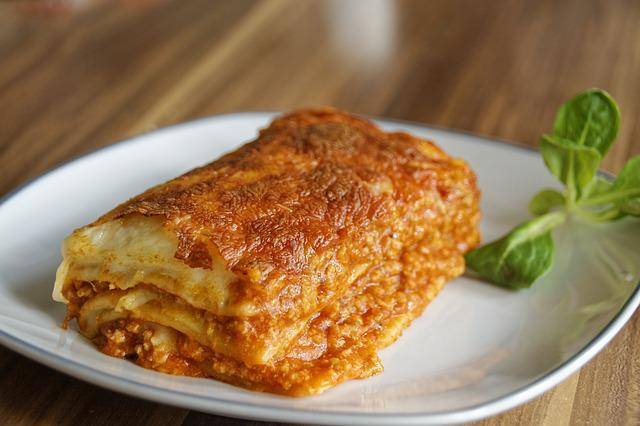

Vegan Lasagna Recipe

Description
Lasagna is the name of one of the oldest and best-known pasta shapes.
It is usually rectangular or ribbon shaped, thicker than tagliatelle,
made from a dough based on flour and eggs, with numerous local variants.
After being boiled, the rectangular lasagna noodles are drained and placed
in layers with a filling that varies based on different local traditions.
Ingredients
- 1 cup dried red lentils
- (2) 25-ounce jars marinara sauce
- 1 cup raw cashews
- 16 ounce firm tofu, patted dry with paper towel
- 1/2 cup nutritional yeast
- 3 tablespoons fresh lemon juice, from about 2 lemons
- 1 teaspoon salt
- 1 teaspoon dried basil
- 1 teaspoon organo
- 1/2 teaspoon garlic powder
- 2-3 cups baby spinach
- 1 box lasagna noodles
- vegan Mozarella Chesse
Steps
- First, cook your lentils Add 1 cup dried red lentils and 3 cups of water to a medium pot.
Bring to a boil, and then simmer for about 20 minutes. Drain the lentils in a fine strainer, and then add to a large bowl.
Add both jars of marinara to the bowl with the lentils and mix to combine. Set aside.
- Preheat the ovento 350 degrees.
- Make the Cashew-Tofu Ricotta:Add the cashews to a food processor and process until fine and crumbly.
Then add the tofu in chunks, nutritional yeast, lemon juice, salt, basil, oregano and garlic powder to the food processor.
Pulse until well combined and pretty smooth.
- Assembling the lasagna:Add about 1 cup of marinara sauce (with the cooked lentils)
to the bottom of a large 9 x 13 inch casserole dish or lasagna pan. Spread it around evenly.
Next add 4-5 lasagna noodles (uncooked). Spread half of the Cashew-Tofu Ricotta on top of the noodles.
Top with half of the spinach. Add about 1 cup of the marinara sauce over the spinach, then place 4-5 lasagna noodles on top.
Spread the rest of the Ricotta over the noodles, then the rest of the spinach. Place 4-5 more noodles on top of the spinach,
and then pour the rest of the sauce over the top, evenly.
- Cover tightly with foil. Bake for 1 hour. Let cool at least 15 minutes before cutting and serving. (see below if using optional mozzarella topping)
- While the lasagna is cooking, make your Vegan Mozzarella Cheese, if using.
- If using the mozzarella topping, simply remove the lasagna after 40 minutes of cooking in the oven.
Spoon on the mozzarella, and pop it back in the oven for another 20 minutes.
Remove, let cool for at least 15 minutes and serve.